Playfair is a transitional design. In the European Enlightenment in the late 18th century, broad nib quills were replaced by pointed steel pens as the popular writing tool of the day. Together with developments in printing technology, ink, and paper making, it became to print letterforms of high contrast and delicate hairlines that were increasingly detached from the written letterforms.
Big fjords vex quick waltz nymph
Big fjords vex quick waltz nymph
Big fjords vex quick waltz nymph
Big fjords vex quick waltz nymph
Big fjords vex quick waltz nymph
Big fjords vex quick waltz nymph
Last
Words
"The taste of death
is upon my lips.
I feel something that is
not of this earth."
- Mozart